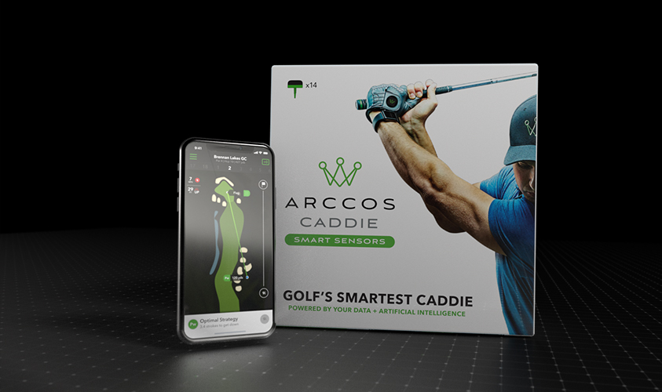
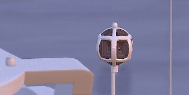

-
Boat-Mounted 360° Camera Visualization
I was tasked with creating a 10-15 second 3D animation to feature this boat-mounted 360° Camera. I was given a CAD model of the product and a sourced yacht model. I modified the given models by reducing topology, UV mapping, and creating custom materials to be rendered in Marmoset Toolbag.
I created the ocean model in blender and generated the textures for this element in Substance Designer. I then put together a custom shader to animate my material in Marmoset, panning overlapping layers of ‘waves’.
Working in Marmoset allowed me to show the client the rendered shot mockup real-time to get exactly the animation timing he needed. The shot was rendered in two sizes, 1080p and 2x1080p. Again, Marmoset helped cut the render speed immensely, rendering the 1080p version in 20 minutes.
-
Abandoned Urban Railway Scene Build
unique models:
- trolley car
- trolley interior
- trolley doors (open/closed)
- grass
- ferns
- flowers
- 3x currugated tin sheets
- streetlamp
- 2x window styles
modular models:
- tunnel sections
- chain link fence
- railroad track
- barrier/walls
- column
- pillar
- concrete shelf
- roadside barrier
Procedural Materials w/ Parameters
- concrete (destruction, dirt, color)
- paint (color, scratches, paint peel amount, underlay metal rust, underlay roughness)
- metal (rust, dirt, roughness)
- currugated tin (metalness, rust)
- wood (color, wear)
Bitmap Textures
- concrete slabs pattern
- landscape (mud, grass, water, debris
- 6x graffiti decals
- 3x crack decals
- 3x crack decals
- 2x trolley decals
Once I had all the models together, I built the scene in Unreal (video). A lot of the work in Unreal is setup, making sure imported models work as intended with materials/lightmapping. After this work is done, it’s very rewarding to be able to build a small scene really quickly.
The biggest challenge in this project was the trolley car itself. I needed to split this model up into several parts to produce correct lighting and material placement in UE4. I had to approach this very methodically, as I wanted the interior to be fairly detailed and allow for variation. -
Building Tool for UE4 Level Design
I found myself always making new models for architecture visualization and level design for UE4, so I created a flexible tool to do this super quickly straight in editor. All architecture is unique, but on the simplest level, it is a series of varied styles of sections of wall, windows, and doors. In addition to these kinds of elements, I wanted to include some roofs, material variations, and stairs.
All the models included in this script are modular at the lowest level possible to be functional for games, and at high enough quality to create seamless lightmapping and texture-wrapping. There are wall sections, window and door sections, door frames and doors, window frame variations, inner and outer trim (top and bottom), roof variations, floors and ceilings.
Material assignments are done within the script, allowing for quick application of materials to a large amount of components. A custom-built procedural edge material is also available in the script, rounding out sharp outer corners.
This is a continual project for me as I improve the script with style and scenario variations. Even with limited styles, the variations are endless with this script, even flexing this tool to make simple fences and roads.
-
Motorola VR Training App
I was the 3D design lead on this project. Working in a small team, we created an app for the promotion of the Moto z2 Force. The app was designed in interactive VR for Google Daydream in Unity. It includes a showcase room, showing specific feature of the phone and 'mods' as 3D models and two minigames.
I was responsible for creating the 3D environments for each of these scenes. I created the models and materials for the environments and devices, including high detail in material for very low polycount product models.
I worked closely with the programmer on the project to deliver scene elements that would work for our scenario. I worked in Unity to establish a scene layout for each of the scenes and minigames. -

UE4 Basement Scene Design
UE4 Environment build, using a set of modular architecture assets I previously created. A few materials in the scene are modified from UE4 starter content, everything else is built by me. This project challenged me to start thinking critically about technical details for modular models in UE4.
I used a lot of reference gathered from the web to create modular pieces for the ceiling, walls and staircase. Lighting was an issue with this project, prompting me to research more about static lighting for UE4. I eventually made a well-recieived tutorial detailing aspects of static lighting for modular assets because of the information I learned during the course of this personal project. -
Procedural Cracked Tile Material
Damaged tile, procedurally generated substance with multiple parameters.
This was one of my first procedural materials created after learning Substance Designer. I wanted the material to be flexible enough to add variations to a cracked tile across a large area, while seamlessly connecting to all variations. There are no bitmaps used in the creation of this material, allowing for it to be scaled to any size and allowing for infinite variation. -
Arccos™ Smart Sensors Visualization
This project consisted of modeling and texturing a sensor from reference, a simple box-wrap of a provided label and app screen, and a render and animation mocking a previous outdated animation by the company.
An element the client wanted was a pulse of light through a ‘dot grid’-like material during this shot. I wanted this to be very flexible so I could easily tweak with client feedback. I approached this effect by creating a custom material in Unreal with parameters I could tweak to grow a circle of light through a masked grid.
The final render was output directly from UE4 at HD quality.
Featured Content
-

product visualization - animation - rendering - material design
Boat-Mounted 360° Camera Visualization
-
VIDEO
materials - substance - 4k - game-ready
Abandoned Urban Railway Scene Build
-
VIDEO
materials - substance - 4k - game-ready
Building Tool for UE4 Level Design
-
materials - Modeling - VR
Motorola VR Training App Content
-
materials - modeling - UE4
UE4 Basement Scene Design
-
materials - substance designer
Procedural Cracked Tile Material
-
Product Visualization - Animation - Rendering - Material Design
Arccos™ Smart Sensors Visualization
about
-
I'm Luke Stilson, a freelance artist based in Raleigh, NC. I graduated from Bradley University in 2016, and began freelancing for a range of Digital Media companies. Through this work, I have gained professional experience creating 3D content for VR games, AR content, visualizations and training simulations.
Succeeding in 3D art means being fast and flexible in many 3D modeling and rendering programs, but also means understanding animation, 2D content creation and programming. With these additional skill-sets, I've taken on other types of digital work--including 2D animation, 2D vector graphics, video editing, and front-end development.
I'm always looking to go one level deeper with my art, scripting my own procedural materials, building my own tools, and recently writing my own shaders. I still rely on a handful of amazing tools, specifically Unreal Engine 4, Substance Designer, Blender, and the Adobe Creative Suite.
I'm interested in the future of 3D design, as user accessibility to 3D content is wider than ever before. AR and VR content is booming, not only for gamers, but also for product visualization, architecture, training & simulation. I'm passionate to stay ahead of the curve on emerging technology in the field and contribute to the industry with my own unique art and useful tools for artists like me.
get in touch
software knowledge

skills & services
- Prop Design
- Environment/Level Design
- Product Visualization
- Architecture Visualization
- Material Design
- Front-End Development
- Tools Development
- C++
- UE4 Blueprint Scripting
- HTML/CSS/SCSS
- Javascript